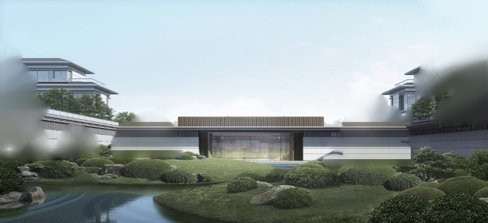
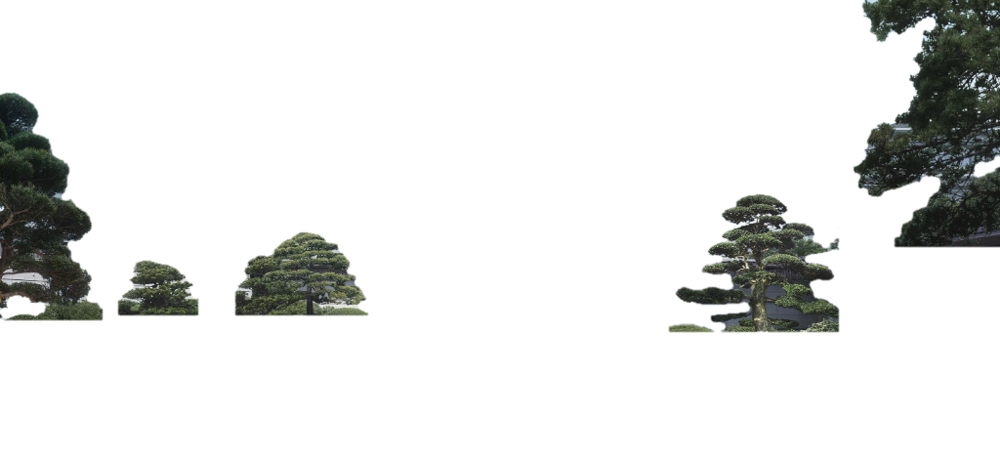

造境
一图造境 3D
实验 1：Marble 多层遮挡补全
Depth-Anything-V2 语义剥离 · 树后石墙 AI 盲区补全 · 零拉丝真 3D 漫游
🌐 实验1：Marble多层补全
✨ 实验2：SHARP 3D高斯泼溅(.splat)
🌊 对照：单层深度水院
🏛️ 达芬奇展厅
🧩 Marble 双层剥离资产拆解
点此透视盲区

① AI补全无树背景墙

② 独立悬空3D罗汉松
🧪 World Labs Marble 实验台
双层分离漫游
🟢 Marble 多层补全漫游 (无拉丝)
推荐
👁️ 透视树后 AI 补全盲区 (隐身前景树)
看盲区
🌲 单独高亮 3D 悬空树木层
看分层
🔴 对照：传统单层网格 (边缘拉丝)
对比缺陷
前景树木层不透明度 (透视树后盲区)
1.00
3D 前后图层空间分离度 (米)
1.35x
庭院时段光影 (晨曦 / 夕阳 / 月夜)
晨曦原图
💡 拖拽旋转或按
WASD
漫游 · 点击下方
「👀 侧视穿插看树后补全石墙」
检验零拉丝真 3D 效果
📸 原图基准机位
👀 侧视穿插：看罗汉松背后补全石墙
🚶 步入水院近景漫游
🦅 俯瞰双层 3D 结构分离
MARBLE 3D LAYER
景点名称
点击查看图层深度与 AI 补全对比
原参考图局部切片 vs AI 盲区补全层
类别
标题
副标题
详情描述